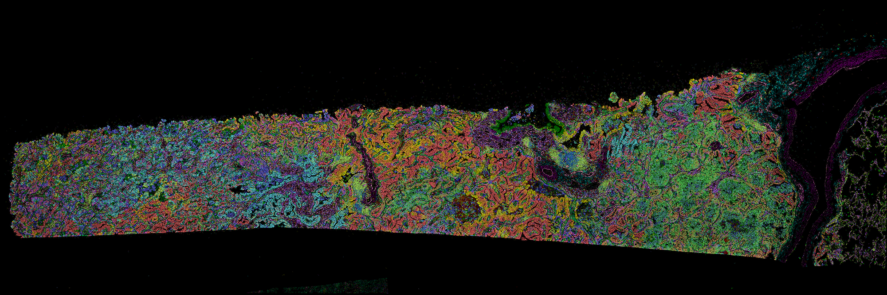

Xenium End-to-End Pipeline¶
This tutorial walks through end‑to‑end processing of 10x Xenium data with CartLoader: converting inputs, running FICTURE, importing cell results and histology, packaging assets, and uploading to AWS for sharing.
Prepare Input¶
Data Access¶
Download the ST data from the 10x Genomics Dataset portal.
If you have wget installed, use the following commands to download the output from 10X.
1 2 3 4 5 6 7 8 9 10 11 12 13 14 15 | |
If you have curl installed, use the following commands to download the output from 10X.
1 2 3 4 5 6 7 8 9 10 11 12 13 14 15 | |
Data Structure and Format¶
See details of the Xenium Ranger output at Xenium Ranger Official Documents
1 2 3 4 5 6 7 8 9 10 11 12 13 14 15 16 17 18 19 20 21 22 23 24 25 26 27 28 29 30 31 32 33 | |
Naming Convention: transcripts.csv.gz or transcripts.parquet
1 2 3 4 | |
- "
transcript_id": Unique identifier for each detected transcript molecule. - "
cell_id": ID of the segmented cell associated with the transcript. - "
overlaps_nucleus": 1 if the transcript overlaps the nucleus mask, 0 otherwise. - "
feature_name": Feature name corresponding to the transcript (typically a gene). - "
x_location": X coordinate of the transcript. - "
y_location": Y coordinate of the transcript. - "
z_location": Z coordinate (depth) of the transcript. - "
qv": Quality value indicating confidence in transcript detection.
Cells
Naming Convention: cells.csv.gz
1 2 3 | |
Cell Boundaries
Naming Convention: cell_boundaries.csv.gz
1 2 3 | |
Clusters
Naming Convention: clusters.csv
1 2 3 | |
Differentially Expressed Genes
Naming Convention: differential_expression.csv
1 2 3 | |
Xenium output comes with tissue morphology images in OME‑TIFF, either nuclei‑only (DAPI) or multimodal (DAPI with cell boundary and interior stains). Each file uses a tiled, pyramidal layout (JPEG‑2000, 16‑bit grayscale) with levels from full resolution down to 256×256 for efficient interactive viewing.
morphology.ome.tif: A 3D Z-stack of the DAPI image.morphology_focus_0000.ome.tif: DAPI imagemorphology_focus_0001.ome.tif: Boundary (ATP1A1/E‑Cadherin/CD45)morphology_focus_0002.ome.tif: Interior — RNA (18S)morphology_focus_0003.ome.tif: Interior — protein (alphaSMA/Vimentin)morphology_mip.ome.tif: DAPI maximum intensity projection (MIP) of the Z‑stack.
Define ID and Parameters¶
1 2 3 4 5 6 7 8 9 10 | |
How to define Scaling Factors for Xenium?
--units-per-um means "coordinate units per micrometer" in your raw transcript coordinates.
For the Xenium example dataset in this tutorial, coordinates are already in µm, so use --units-per-um 1.
Check this value for your own dataset
Do not assume --units-per-um 1 is always correct. Always verify the coordinate unit in your input data.
If your coordinates are in pixels (or any unit other than µm), set --units-per-um to the correct value.
Example Runs¶
Choose one of the following options to run the run_xenium pipeline, either locally or with Docker.
In the following examples, only DAPI_OME image is deployed. Alternatively, CartLoader supports --all-images to deploy all detected images.
Run Pipeline Locally¶
Set Up Environment
1 2 3 4 5 6 7 8 9 10 11 12 13 14 15 16 17 18 19 20 21 22 | |
Example Command
1 2 3 4 5 6 7 8 9 10 11 12 13 14 15 16 17 18 19 20 21 22 23 24 25 26 | |
Run Pipeline via Docker¶
Set Up Environment
Fixed paths in the Docker Image
Tools and dependencies have fixed paths in the Docker image (for example, /usr/local/bin/pmtiles).
DO NOT modify paths of tools and dependencies manually.
1 2 3 4 5 6 7 8 9 10 11 12 13 14 15 16 17 18 19 20 21 | |
Example Command
1 2 3 4 5 6 7 8 9 10 11 12 13 14 15 16 17 18 19 20 21 22 23 24 25 26 | |
Customize Parameters¶
Action Flags to Enable Modules
Actions
run_xenium runs multiple CartLoader modules together; enable and combine actions with flags.
CartLoader Modules |
Flags in run_xenium |
Actions | Prerequisites |
|---|---|---|---|
load_xenium_ranger |
--load-xenium-ranger |
Summarize Xenium Ranger outputs into JSON | Xenium Output files |
sge_convert |
--sge-convert |
Convert SGE to CartLoader format; optional density filter and visuals |
Xenium assets JSON (from load_xenium_ranger) or transcript CSV/Parquet |
run_ficture2 |
--run-ficture2 |
FICTURE analysis | SGE (from sge_convert); FICTURE parameters (--width, --n-factor) |
import_xenium_cell |
--import-cells |
Import cell points, boundaries, cluster, de; | Xenium assets JSON or manual CSVs; also --cell-id |
import_image |
--import-images |
Import background images (OME‑TIFF) → PNG/PMTiles; | Xenium assets JSON or --ome-tifs; also --image-ids or --all-images |
run_cartload2 |
--run-cartload2 |
Package SGE, optional FICTURE/cells/images into PMTiles; write catalog.yaml |
SGE, optional FICTURE assets or any imported cell/image assets; --id |
upload_aws |
--upload-aws |
Upload catalog and PMTiles to S3 | catalog.yaml (from run_cartload2); --s3-bucket, --id |
upload_zenodo |
--upload-zenodo |
Upload catalog and PMTiles to Zenodo | catalog.yaml (from run_cartload2); --zenodo-token |
Parameter Requirements by Action Flag
Below are explanations of the parameters used in the example. For the full list, see the run_xenium reference page.
| Parameter | Required when flags | Description |
|---|---|---|
--xenium-ranger-dir |
--load-xenium-ranger |
Xenium Ranger output directory to scan. |
--xenium-ranger-assets |
optional --load-xenium-ranger |
Output JSON manifest path (defaults under --out-dir). |
--width |
--run-ficture2 |
Hexagon width(s) in µm for training/projection. |
--n-factor |
--run-ficture2 |
Factor count(s) for FICTURE training. |
--cell-id |
--import-cells |
Asset ID/prefix for cell outputs. |
--image-ids or --all-images |
--import-images |
Choose specific image IDs or import all detected. |
--id |
--run-cartload2 |
Catalog ID (used in catalog.yaml and outputs). |
--s3-dir |
--upload-aws |
Destination S3 path (e.g., s3://bucket/prefix). |
--out-dir |
any action | Output root directory for generated artifacts. |
--dry-run, --restart |
optional (any) | Control execution (preview or rerun ignoring existing outputs). |
--n-jobs, --threads |
optional (any) | Parallelism for Make/GDAL/tippecanoe steps. |
Outputs¶
-

View/Explore¶
The outputs are available in CartoScope.
See output details in the reference pages for run_ficture2 and run_cartload2.